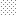

<!doctype html>
<html lang="en">
    <head>
        <meta charset="utf-8">
        <meta http-equiv="X-UA-Compatible" content="IE=edge">
        <meta name="viewport" content="initial-scale=1,user-scalable=no,maximum-scale=1,width=device-width">
        <meta name="mobile-web-app-capable" content="yes">
        <meta name="apple-mobile-web-app-capable" content="yes">
        <link rel="stylesheet" href="css/leaflet.css">
        <link rel="stylesheet" href="css/qgis2web.css"><link rel="stylesheet" href="css/fontawesome-all.min.css">
        <style>
        body { margin: 0; padding: 0; }
        #map { position: absolute; top: 0; bottom: 0; width: 100%; }
        </style>
        <title></title>
    </head>
    <body>
        <div id="map">
        </div>
        <script src="js/qgis2web_expressions.js"></script>
        <script src="js/leaflet.js"></script>
        <script src="js/leaflet.rotatedMarker.js"></script>
        <script src="js/leaflet.pattern.js"></script>
        <script src="js/leaflet-hash.js"></script>
        <script src="js/Autolinker.min.js"></script>
        <script src="js/rbush.min.js"></script>
        <script src="js/labelgun.min.js"></script>
        <script src="js/labels.js"></script>
        <script src="data/AnalysisArea_1.js"></script>
        <script src="data/SettlementAreas_2.js"></script>
        <script src="data/MangroveForest2016_3.js"></script>
        <script src="data/SongorProjectArea_4.js"></script>
        <script src="data/FiaxorProjectArea_5.js"></script>
        <script src="data/DeforestationZones19962016_6.js"></script>
        <script>
        var highlightLayer;
        function highlightFeature(e) {
            highlightLayer = e.target;

            if (e.target.feature.geometry.type === 'LineString') {
              highlightLayer.setStyle({
                color: '#ffff00',
              });
            } else {
              highlightLayer.setStyle({
                fillColor: '#ffff00',
                fillOpacity: 1
              });
            }
        }
        var map = L.map('map', {
            zoomControl:true, maxZoom:28, minZoom:1
        }).fitBounds([[5.647438236704499,0.2876605612129752],[6.072372439327111,1.100382551417273]]);
        var hash = new L.Hash(map);
        map.attributionControl.setPrefix('<a href="https://github.com/tomchadwin/qgis2web" target="_blank">qgis2web</a> &middot; <a href="https://leafletjs.com" title="A JS library for interactive maps">Leaflet</a> &middot; <a href="https://qgis.org">QGIS</a>');
        var autolinker = new Autolinker({truncate: {length: 30, location: 'smart'}});
        var bounds_group = new L.featureGroup([]);
        function setBounds() {
        }
        map.createPane('pane_OpenStreetMap_0');
        map.getPane('pane_OpenStreetMap_0').style.zIndex = 400;
        var layer_OpenStreetMap_0 = L.tileLayer('https://tile.openstreetmap.org/{z}/{x}/{y}.png', {
            pane: 'pane_OpenStreetMap_0',
            opacity: 1.0,
            attribution: '',
            minZoom: 1,
            maxZoom: 28,
            minNativeZoom: 0,
            maxNativeZoom: 19
        });
        layer_OpenStreetMap_0;
        map.addLayer(layer_OpenStreetMap_0);
        function pop_AnalysisArea_1(feature, layer) {
            layer.on({
                mouseout: function(e) {
                    for (i in e.target._eventParents) {
                        e.target._eventParents[i].resetStyle(e.target);
                    }
                },
                mouseover: highlightFeature,
            });
            var popupContent = '<table>\
                    <tr>\
                        <td colspan="2">' + (feature.properties['FID'] !== null ? autolinker.link(feature.properties['FID'].toLocaleString()) : '') + '</td>\
                    </tr>\
                </table>';
            layer.bindPopup(popupContent, {maxHeight: 400});
        }

        function style_AnalysisArea_1_0() {
            return {
                pane: 'pane_AnalysisArea_1',
                opacity: 1,
                color: 'rgba(183,65,65,1.0)',
                dashArray: '',
                lineCap: 'butt',
                lineJoin: 'miter',
                weight: 1.0, 
                fillOpacity: 0,
                interactive: false,
            }
        }
        map.createPane('pane_AnalysisArea_1');
        map.getPane('pane_AnalysisArea_1').style.zIndex = 401;
        map.getPane('pane_AnalysisArea_1').style['mix-blend-mode'] = 'normal';
        var layer_AnalysisArea_1 = new L.geoJson(json_AnalysisArea_1, {
            attribution: '',
            interactive: false,
            dataVar: 'json_AnalysisArea_1',
            layerName: 'layer_AnalysisArea_1',
            pane: 'pane_AnalysisArea_1',
            onEachFeature: pop_AnalysisArea_1,
            style: style_AnalysisArea_1_0,
        });
        bounds_group.addLayer(layer_AnalysisArea_1);
        map.addLayer(layer_AnalysisArea_1);
        function pop_SettlementAreas_2(feature, layer) {
            layer.on({
                mouseout: function(e) {
                    for (i in e.target._eventParents) {
                        e.target._eventParents[i].resetStyle(e.target);
                    }
                },
                mouseover: highlightFeature,
            });
            var popupContent = '<table>\
                    <tr>\
                        <th scope="row">landuse</th>\
                        <td>' + (feature.properties['landuse'] !== null ? autolinker.link(feature.properties['landuse'].toLocaleString()) : '') + '</td>\
                    </tr>\
                </table>';
            layer.bindPopup(popupContent, {maxHeight: 400});
        }

        function style_SettlementAreas_2_0() {
            return {
                pane: 'pane_SettlementAreas_2',
                stroke: false, 
                fill: true,
                fillOpacity: 0.1,
                fillColor: 'rgba(123,123,123,1.0)',
                interactive: true,
            }
        }
        map.createPane('pane_SettlementAreas_2');
        map.getPane('pane_SettlementAreas_2').style.zIndex = 402;
        map.getPane('pane_SettlementAreas_2').style['mix-blend-mode'] = 'normal';
        var layer_SettlementAreas_2 = new L.geoJson(json_SettlementAreas_2, {
            attribution: '',
            interactive: true,
            dataVar: 'json_SettlementAreas_2',
            layerName: 'layer_SettlementAreas_2',
            pane: 'pane_SettlementAreas_2',
            onEachFeature: pop_SettlementAreas_2,
            style: style_SettlementAreas_2_0,
        });
        bounds_group.addLayer(layer_SettlementAreas_2);
        map.addLayer(layer_SettlementAreas_2);
        function pop_MangroveForest2016_3(feature, layer) {
            layer.on({
                mouseout: function(e) {
                    for (i in e.target._eventParents) {
                        e.target._eventParents[i].resetStyle(e.target);
                    }
                },
                mouseover: highlightFeature,
            });
            var popupContent = '<table>\
                    <tr>\
                        <td colspan="2">' + (feature.properties['fid'] !== null ? autolinker.link(feature.properties['fid'].toLocaleString()) : '') + '</td>\
                    </tr>\
                    <tr>\
                        <td colspan="2">' + (feature.properties['DN'] !== null ? autolinker.link(feature.properties['DN'].toLocaleString()) : '') + '</td>\
                    </tr>\
                </table>';
            layer.bindPopup(popupContent, {maxHeight: 400});
        }

        function style_MangroveForest2016_3_0() {
            return {
                pane: 'pane_MangroveForest2016_3',
                stroke: false, 
                fill: true,
                fillOpacity: 0.3,
                fillColor: 'rgba(102,198,122,1.0)',
                interactive: false,
            }
        }
        map.createPane('pane_MangroveForest2016_3');
        map.getPane('pane_MangroveForest2016_3').style.zIndex = 403;
        map.getPane('pane_MangroveForest2016_3').style['mix-blend-mode'] = 'normal';
        var layer_MangroveForest2016_3 = new L.geoJson(json_MangroveForest2016_3, {
            attribution: '',
            interactive: false,
            dataVar: 'json_MangroveForest2016_3',
            layerName: 'layer_MangroveForest2016_3',
            pane: 'pane_MangroveForest2016_3',
            onEachFeature: pop_MangroveForest2016_3,
            style: style_MangroveForest2016_3_0,
        });
        bounds_group.addLayer(layer_MangroveForest2016_3);
        map.addLayer(layer_MangroveForest2016_3);
        function pop_SongorProjectArea_4(feature, layer) {
            layer.on({
                mouseout: function(e) {
                    for (i in e.target._eventParents) {
                        e.target._eventParents[i].resetStyle(e.target);
                    }
                },
                mouseover: highlightFeature,
            });
            var popupContent = '<table>\
                    <tr>\
                        <th scope="row">area (ha)</th>\
                        <td>' + (feature.properties['area (ha)'] !== null ? autolinker.link(feature.properties['area (ha)'].toLocaleString()) : '') + '</td>\
                    </tr>\
                </table>';
            layer.bindPopup(popupContent, {maxHeight: 400});
        }

        function style_SongorProjectArea_4_0() {
            return {
                pane: 'pane_SongorProjectArea_4',
                opacity: 0.8,
                color: 'rgba(149,85,184,1.0)',
                dashArray: '',
                lineCap: 'butt',
                lineJoin: 'miter',
                weight: 2.0, 
                fillOpacity: 0,
                interactive: true,
            }
        }
        map.createPane('pane_SongorProjectArea_4');
        map.getPane('pane_SongorProjectArea_4').style.zIndex = 404;
        map.getPane('pane_SongorProjectArea_4').style['mix-blend-mode'] = 'normal';
        var layer_SongorProjectArea_4 = new L.geoJson(json_SongorProjectArea_4, {
            attribution: '',
            interactive: true,
            dataVar: 'json_SongorProjectArea_4',
            layerName: 'layer_SongorProjectArea_4',
            pane: 'pane_SongorProjectArea_4',
            onEachFeature: pop_SongorProjectArea_4,
            style: style_SongorProjectArea_4_0,
        });
        bounds_group.addLayer(layer_SongorProjectArea_4);
        map.addLayer(layer_SongorProjectArea_4);
        function pop_FiaxorProjectArea_5(feature, layer) {
            layer.on({
                mouseout: function(e) {
                    for (i in e.target._eventParents) {
                        e.target._eventParents[i].resetStyle(e.target);
                    }
                },
                mouseover: highlightFeature,
            });
            var popupContent = '<table>\
                    <tr>\
                        <th scope="row">area (ha)</th>\
                        <td>' + (feature.properties['area (ha)'] !== null ? autolinker.link(feature.properties['area (ha)'].toLocaleString()) : '') + '</td>\
                    </tr>\
                </table>';
            layer.bindPopup(popupContent, {maxHeight: 400});
        }

        function style_FiaxorProjectArea_5_0() {
            return {
                pane: 'pane_FiaxorProjectArea_5',
                opacity: 0.8,
                color: 'rgba(149,85,184,1.0)',
                dashArray: '',
                lineCap: 'butt',
                lineJoin: 'miter',
                weight: 2.0, 
                fillOpacity: 0,
                interactive: true,
            }
        }
        map.createPane('pane_FiaxorProjectArea_5');
        map.getPane('pane_FiaxorProjectArea_5').style.zIndex = 405;
        map.getPane('pane_FiaxorProjectArea_5').style['mix-blend-mode'] = 'normal';
        var layer_FiaxorProjectArea_5 = new L.geoJson(json_FiaxorProjectArea_5, {
            attribution: '',
            interactive: true,
            dataVar: 'json_FiaxorProjectArea_5',
            layerName: 'layer_FiaxorProjectArea_5',
            pane: 'pane_FiaxorProjectArea_5',
            onEachFeature: pop_FiaxorProjectArea_5,
            style: style_FiaxorProjectArea_5_0,
        });
        bounds_group.addLayer(layer_FiaxorProjectArea_5);
        map.addLayer(layer_FiaxorProjectArea_5);
        function pop_DeforestationZones19962016_6(feature, layer) {
            layer.on({
                mouseout: function(e) {
                    for (i in e.target._eventParents) {
                        e.target._eventParents[i].resetStyle(e.target);
                    }
                },
                mouseover: highlightFeature,
            });
            var popupContent = '<table>\
                    <tr>\
                        <th scope="row">layer</th>\
                        <td>' + (feature.properties['layer'] !== null ? autolinker.link(feature.properties['layer'].toLocaleString()) : '') + '</td>\
                    </tr>\
                    <tr>\
                        <th scope="row">area (ha)</th>\
                        <td>' + (feature.properties['area (ha)'] !== null ? autolinker.link(feature.properties['area (ha)'].toLocaleString()) : '') + '</td>\
                    </tr>\
                </table>';
            layer.bindPopup(popupContent, {maxHeight: 400});
        }

        function style_DeforestationZones19962016_6_0() {
            return {
                pane: 'pane_DeforestationZones19962016_6',
                stroke: false, 
                fill: true,
                fillOpacity: 0.9,
                fillColor: 'rgba(191,79,77,1.0)',
                interactive: true,
            }
        }
        map.createPane('pane_DeforestationZones19962016_6');
        map.getPane('pane_DeforestationZones19962016_6').style.zIndex = 406;
        map.getPane('pane_DeforestationZones19962016_6').style['mix-blend-mode'] = 'normal';
        var layer_DeforestationZones19962016_6 = new L.geoJson(json_DeforestationZones19962016_6, {
            attribution: '',
            interactive: true,
            dataVar: 'json_DeforestationZones19962016_6',
            layerName: 'layer_DeforestationZones19962016_6',
            pane: 'pane_DeforestationZones19962016_6',
            onEachFeature: pop_DeforestationZones19962016_6,
            style: style_DeforestationZones19962016_6_0,
        });
        bounds_group.addLayer(layer_DeforestationZones19962016_6);
        map.addLayer(layer_DeforestationZones19962016_6);
        var baseMaps = {};
        L.control.layers(baseMaps,{' Deforestation Zones (1996-2016)': layer_DeforestationZones19962016_6,' Fiaxor Project Area': layer_FiaxorProjectArea_5,' Songor Project Area': layer_SongorProjectArea_4,' Mangrove Forest (2016)': layer_MangroveForest2016_3,' Settlement Areas': layer_SettlementAreas_2,' Analysis Area': layer_AnalysisArea_1,"OpenStreetMap": layer_OpenStreetMap_0,}).addTo(map);
        setBounds();
        </script>
    </body>
</html>
